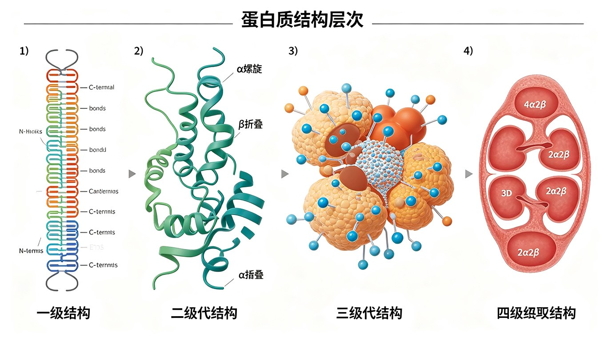

蛋白质结构层次总论
蛋白质的结构层次分为四个层次：一级结构（氨基酸序列）、二级结构（局部主链折叠）、三级结构（整条多肽链的三维构象）、四级结构（多个亚基的空间排列）。蛋白质的高级结构（二级及以上）统称为构象（conformation），由非共价键（氢键、疏水作用、范德华力、离子键）和共价二硫键稳定。
蛋白质折叠的热力学基础：蛋白质从无规卷曲（random coil）折叠为天然构象的过程是吉布斯自由能降低的过程（ΔG < 0）。折叠的驱动力主要是疏水效应（hydrophobic effect）——非极性侧链从水中埋入蛋白质内部，释放水分子，使系统熵增加。天然态与变性态之间的 ΔG 通常仅 20~65 kJ/mol（相当于 2~3 个氢键的能量），因此蛋白质结构稳定性是多种弱相互作用的总和。
一级结构 (Primary Structure)
一级结构即蛋白质的氨基酸序列（从 N 端到 C 端）。一级结构由基因编码决定，是蛋白质高级结构的基础。Christian Anfinsen 的经典实验（1972 年诺贝尔化学奖）证明了"一级结构决定高级结构"。
Anfinsen 实验（核糖核酸酶 A 的变性与复性）：RNase A（124 个氨基酸，4 个二硫键）在 8 M 尿素 + β-巯基乙醇（还原二硫键）中完全变性失活。透析去除变性剂和还原剂后，RNase A 自发恢复天然构象和全部酶活性。随机重组的 4 对二硫键有 105 种可能配对方式，但蛋白质准确选择了唯一的天然配对方式。结论：蛋白质的三维结构信息全部编码在其氨基酸序列中。
二级结构 (Secondary Structure)
二级结构是蛋白质主链局部通过氢键形成的规则折叠模式。主要类型包括 α-螺旋、β-折叠、β-转角和无规卷曲。二级结构的氢键发生在主链的 C=O 和 N—H 之间（侧链不参与）。
3.1 α-螺旋 (α-Helix)
α-螺旋是蛋白质中最常见的二级结构类型，由 Linus Pauling 和 Robert Corey 于 1951 年预测，后被实验证实。α-螺旋的特征参数：
- 每圈 3.6 个氨基酸残基（准确值为 3.6₁₃，即 3.613 个残基/圈）
- 螺距（pitch）：0.54 nm（5.4 Å）
- 每个残基沿螺旋轴上升 0.15 nm（1.5 Å）
- 每个残基旋转 100°
- 二面角：φ ≈ -57°, ψ ≈ -47°
- 氢键模式：第 n 个残基的 C=O 与第 n+4 个残基的 N—H 形成氢键（i → i+4）
- 氢键方向几乎平行于螺旋轴
- 宏观偶极矩：N 端带部分正电荷（δ⁺），C 端带部分负电荷（δ⁻）
α-螺旋的破坏者：脯氨酸（Pro）——N 原子上无 H 供氢键形成 + 吡咯环刚性限制 φ 角；甘氨酸（Gly）——侧链过小（仅 H），构象过于灵活，不利于螺旋稳定。连续的带电荷氨基酸（如多个 Lys 或 Glu 相邻）因静电排斥也破坏螺旋。
α-螺旋的螺旋轮图（helical wheel）：将螺旋沿轴投影，每 3.6 个残基一圈，因此第 n 和 n+3/n+4 残基在螺旋同一侧，形成两亲性螺旋（amphipathic helix）——一侧疏水、一侧亲水。这是膜蛋白跨膜螺旋和某些 DNA 结合蛋白（如亮氨酸拉链）的结构基础。
3.2 β-折叠 (β-Sheet)
β-折叠由两条或多条伸展的 β-链（β-strand）通过链间主链氢键形成。β-折叠呈"锯齿状"（zigzag）构象，侧链交替指向折叠平面的上方和下方。
β-折叠的两种排列方式：
- 平行 β-折叠（parallel）：相邻 β-链方向相同（N→C 方向一致）。氢键等距但弯曲，结构较不稳定。二面角：φ ≈ -119°, ψ ≈ +113°。
- 反平行 β-折叠（antiparallel）：相邻 β-链方向相反。氢键垂直于链方向，距离相等，更稳定。二面角：φ ≈ -139°, ψ ≈ +135°。
- 混合 β-折叠：同时含平行和反平行片层。
β-转角的类型：I 型（Pro 在 i+1 位置常见）、II 型（Gly 在 i+2 位置必需，因侧链空间位阻）、I' 和 II' 型（主链二面角反转）。β-转角通常由 4 个残基组成，第 i 个残基的 C=O 与第 i+3 个残基的 N—H 形成氢键。
三级结构 (Tertiary Structure)
三级结构是整条多肽链在三维空间中的完整折叠构象，由二级结构元件（α-螺旋、β-折叠等）通过 loops 和 turns 连接而成。三级结构由多种非共价键和共价二硫键稳定。
稳定三级结构的力：
- 疏水作用：非极性侧链聚集在蛋白质内部（主要驱动力）
- 氢键：侧链-侧链、侧链-主链、主链-主链
- 离子键（盐桥）：带相反电荷的侧链之间（如 Lys-NH₃⁺···⁻OOC-Asp）
- 范德华力：紧密堆积的原子间弱相互作用
- 二硫键（—S—S—）：两个 Cys 残基的—SH 氧化形成的共价交联。主要存在于分泌蛋白和胞外蛋白中（胞内还原环境不利于二硫键形成）
4.1 蛋白质结构域 (Protein Domain)
结构域（domain）是蛋白质三级结构中独立折叠的结构和功能单位，通常由 100~250 个氨基酸残基组成。一个蛋白质可以含有一个或多个结构域，不同结构域执行不同功能。结构域是蛋白质进化的基本模块——"外显子洗牌"（exon shuffling）假说。
常见结构域类型：
- Rossmann 折叠：βαβαβ 模式，典型核苷酸结合结构域（NAD⁺/NADH 结合）。乳酸脱氢酶、醇脱氢酶等含此结构域。
- α/β 桶（TIM barrel）：8 个平行 β-折叠构成桶状核心，外围 8 个 α-螺旋。磷酸丙糖异构酶（TIM）为代表。是最常见的酶折叠模式之一。
- 四螺旋束（four-helix bundle）：4 个 α-螺旋捆绑形成。如细胞色素 b₅₂、生长激素。
- β-桶（β-barrel）：反平行 β-折叠卷成桶状。如视黄醇结合蛋白、绿色荧光蛋白（GFP）。
- 免疫球蛋白折叠（Ig fold）：两个 β-片层夹心结构。抗体、T 细胞受体、黏附分子等。
- 锌指结构域（zinc finger）：Zn²⁺ 与 Cys/His 配位，形成 DNA/RNA 结合模块。
四级结构 (Quaternary Structure)
四级结构是多亚基蛋白质中各个亚基（subunit）的空间排列和相互作用。单一多肽链即可形成三级结构，但四级结构涉及多条多肽链（相同或不同）的组装。亚基间通过非共价键（氢键、疏水作用、离子键）结合。
经典例子：
- 血红蛋白（Hb）：α₂β₂ 四聚体。α 和 β 亚基均含血红素辅基。亚基间存在协同效应——一个亚基结合 O₂ 后促进其他亚基结合 O₂（正协同效应）。
- 天冬氨酸转氨甲酰酶（ATCase）：c₆r₆，6 个催化亚基 + 6 个调节亚基。别构调节的经典模型。
- 肌红蛋白（Mb）：单体（仅一条多肽链 + 血红素），无四级结构。Mb 与 Hb 的 O₂ 结合曲线不同（Mb 双曲线，Hb S 形曲线）。

蛋白质折叠与分子伴侣
虽然 Anfinsen 实验证明蛋白质可以自发折叠，但在细胞内拥挤的环境中（蛋白质浓度高达 200~300 mg/mL），新合成的多肽链容易发生错误折叠和聚集。分子伴侣系统帮助蛋白质正确折叠。
主要分子伴侣系统：
- Hsp70 系统（DnaK-DnaJ-GrpE 在大肠杆菌中）：Hsp70（DnaK）与新生肽链的疏水区域结合，防止聚集。DnaJ（Hsp40）促进 Hsp70 的 ATP 酶活性，GrpE 促进 ADP/ATP 交换。Hsp70 在翻译过程中即与新生肽链结合（共翻译折叠）。
- Hsp60/伴侣蛋白（GroEL-GroES 在大肠杆菌中）：GroEL 是 14 个亚基组成的双环结构（每个环 7 个亚基），形成一个大的中央空腔。GroES 是 7 个亚基组成的"盖子"。未折叠蛋白进入 GroEL 空腔，在"隔离"环境中折叠，避免聚集。每个循环消耗 7 个 ATP。
- Hsp90 系统：参与信号转导蛋白（如类固醇激素受体、激酶）的成熟和构象调节。
二硫键异构酶（PDI）：催化不正确二硫键的断裂和重排，帮助蛋白质找到正确的二硫键配对方式。PDI 的活性位点含 Cys-X-X-Cys 序列。
肽基脯氨酰顺反异构酶（PPI）：催化 X-Pro 肽键的顺反异构化。由于 Pro 的肽键以顺式存在的比例较高（~10%），而天然构象通常要求特定的顺反构型，PPI 加速这一缓慢的异构化过程，是蛋白质折叠的限速酶之一。免疫抑制剂环孢素 A 和 FK506 分别与亲环素（cyclophilin）和 FKBP（FK506 结合蛋白）结合，抑制其 PPI 活性。
蛋白质折叠疾病与错误折叠
蛋白质错误折叠（misfolding）可导致多种严重疾病，统称为构象病（conformational disease）或蛋白质折叠疾病。错误折叠的蛋白质倾向于形成不可溶的纤维状聚集物（淀粉样纤维 amyloid fibril），其基本结构为交叉 β-折叠（cross-β structure）——β-链垂直于纤维轴排列。
主要蛋白质折叠疾病：
- 阿尔茨海默病（Alzheimer's disease, AD）：β-淀粉样蛋白（Aβ）在细胞外形成老年斑；tau 蛋白过度磷酸化在胞内形成神经原纤维缠结（NFT）。Aβ 由 APP（淀粉样前体蛋白）经 β-分泌酶和 γ-分泌酶顺序切割产生。
- 帕金森病（Parkinson's disease）：α-突触核蛋白（α-synuclein）在神经元胞质中聚集形成 Lewy 小体。
- 亨廷顿病（Huntington's disease）：亨廷顿蛋白（huntingtin）N 端多聚谷氨酰胺（polyQ）片段过长（CAG 三核苷酸重复扩增），导致蛋白聚集。
- 朊病毒病（prion disease）：PrPC（正常朊蛋白，富含 α-螺旋）→ PrPSc（致病型，富含 β-折叠）。PrPSc 可"诱导"PrPC 转变为致病构象，具有传染性。
- 囊性纤维化（cystic fibrosis, CF）：CFTR 蛋白（氯离子通道）因 ΔF508 突变（删除 Phe508）导致错误折叠，被 ER 质量控制机制识别并降解，无法到达质膜。
蛋白质降解途径
细胞内的蛋白质处于持续合成与降解的动态平衡中。蛋白质降解不仅清除损伤和错误折叠的蛋白质，还调控多种生物学过程（细胞周期、信号转导、转录调控）。
两大主要降解途径：
- 泛素-蛋白酶体途径（ubiquitin-proteasome system, UPS）：
① 泛素（ubiquitin，76 个氨基酸的小蛋白）通过 E1（泛素激活酶）→ E2（泛素结合酶）→ E3（泛素连接酶）级联反应，共价连接到靶蛋白的 Lys 残基上。② 多聚泛素链（通常 K48 连接，至少 4 个泛素）标记蛋白质被 26S 蛋白酶体识别和降解。③ 26S 蛋白酶体：20S 核心颗粒（α₇β₇β₇α₇ 四环结构，β 亚基含蛋白酶活性）+ 19S 调节颗粒（识别泛素化底物、去折叠、转位）。④ 去泛素化酶（DUB）回收泛素。
- 自噬-溶酶体途径（autophagy-lysosome pathway）：主要降解长寿蛋白和整个细胞器。自噬体包裹待降解物，与溶酶体融合形成自噬溶酶体，由溶酶体水解酶降解。
蛋白质半衰期：不同蛋白质的半衰期差异极大——鸟氨酸脱羧酶 ~11 分钟（最短），血红蛋白 ~120 天（红细胞寿命）。根据 N 端规则（N-end rule）：N 端氨基酸的类型决定蛋白质的稳定性（"去稳定"残基如 Arg、Lys、Phe 等标记蛋白质快速降解）。
蛋白质结构与功能的关系——经典案例
镰状细胞贫血（sickle cell anemia）——蛋白质一级结构改变导致严重疾病的经典例证：血红蛋白 β 链第 6 位 Glu（极性带负电）→ Val（疏水）。这一单个氨基酸替换使 HbS（镰状血红蛋白）在脱氧状态下聚合形成纤维，红细胞变为镰刀状，堵塞毛细血管，导致疼痛危象和器官损伤。杂合子（HbAS）对疟疾有抵抗优势（疟原虫难以在镰状细胞中繁殖），这是平衡多态性的经典例子。
胶原蛋白的结构层次：
- 一级结构：重复序列 (Gly-X-Y)n，X 常为 Pro，Y 常为 Hyp（4-羟脯氨酸）
- 二级结构：左手螺旋（每圈 3 个残基，不同于 α-螺旋的 3.6 个残基）
- 三级结构：三条左手螺旋链缠绕形成右手超螺旋（三螺旋结构，tropocollagen）
- 四级结构：原胶原分子交错排列形成胶原纤维，共价交联增强强度
Gly 的必要性：三螺旋中心非常拥挤，只有 Gly（R=H）能容纳在三条链的交界处。Gly 被其他氨基酸取代会导致成骨不全症（osteogenesis imperfecta，脆骨病）。
补充内容
补充知识点——以下内容整合自教师讲义OCR文字和大学教材，涵盖竞赛高频考点。
细胞学说与经典实验回顾：细胞生物学的发展离不开经典实验。Avery-MacLeod-McCarty 实验（1944）证明 DNA 是转化因子（肺炎链球菌转化实验）；Hershey-Chase 实验（1952）用 ³²P 标记 DNA、³⁵S 标记蛋白质，确证 DNA 是遗传物质；Meselson-Stahl 实验（1958）用 ¹⁵N 密度梯度离心证明了 DNA 半保留复制。这些实验是分子生物学的奠基石。
竞赛重点记忆：Gorter 和 Grendel（1925）从红细胞中提取脂质，铺展成单分子层，发现其面积恰好是红细胞表面积的 2 倍，从而提出脂双层假说——这是细胞膜结构研究的起点。Frye 和 Edidin（1970）的人-鼠细胞融合实验（用荧光标记抗体追踪膜蛋白分布）证明了膜蛋白可以在脂双层中侧向扩散，为流动镶嵌模型提供了关键实验证据。
显微镜技术里程碑：光学显微镜分辨率极限约 0.2 μm（受可见光波长限制）；电子显微镜分辨率可达 0.2 nm（透射电镜 TEM 观察内部结构，扫描电镜 SEM 观察表面形貌）；荧光显微镜（包括共聚焦显微镜 confocal）可标记特定分子在细胞中的定位；冷冻蚀刻技术（freeze-fracture）是观察膜蛋白跨膜分布的关键技术——在脂双层中部断裂，暴露出膜内蛋白颗粒。
本节必背考点
- 四个结构层次：一级（序列）→ 二级（α-螺旋、β-折叠）→ 三级（整条链折叠）→ 四级（多亚基组装）。
- Anfinsen 实验：RNase A 复性证明一级结构决定高级结构。105 种二硫键配对中只选天然配对。
- α-螺旋参数：3.6₁₃ 残基/圈，螺距 0.54 nm，φ/ψ = -57°/-47°，i→i+4 氢键。Pro 破坏 α-螺旋。
- β-折叠：平行（φ/ψ ≈ -119°/+113°）vs 反平行（φ/ψ ≈ -139°/+135°）。反平行更稳定。
- β-转角：4 残基反向转折，II 型 i+2 位必须是 Gly。
- 结构域：独立折叠的进化模块。Rossmann 折叠（NAD⁺ 结合）、TIM barrel、锌指（DNA 结合）。
- 四级结构：Hb（α₂β₂，正协同效应，S 形 O₂ 结合曲线）vs Mb（单体，双曲线）。
- 分子伴侣：Hsp70（共翻译折叠）、GroEL-GroES（隔离折叠腔）、PDI（二硫键重排）、PPI（Pro 顺反异构）。
- 折叠驱动力：疏水效应是主要驱动力。ΔG 折叠仅 20~65 kJ/mol。
高中教材衔接 · 课标对应
人教版必修1 第2章 "组成细胞的分子"——蛋白质的结构与功能：高中课标只要求定性了解蛋白质的多级结构——①一级结构：氨基酸的排列顺序（高中不要求结构式细节）；②空间结构：多肽链通过盘曲折叠形成特定三维结构；③蛋白质的变性：高温、强酸、强碱、重金属盐等条件使蛋白质空间结构破坏而失去活性，肽键不断裂（这一条是重点）。实验：双缩脲试剂鉴定蛋白质（紫色）；蛋白酶催化水解（说明酶也是蛋白质）。
人教版必修1 第5章 "酶"：①酶的本质大多数是蛋白质，少数是 RNA（核酶）；②酶的高效性、专一性、作用条件温和；③激活剂和抑制剂；④竞争性抑制剂与非竞争性抑制剂的概念（高中只要求区分）。
人教版必修1 第3章 "细胞膜的结构和功能"——跨膜蛋白：受体蛋白（识别信息）、载体蛋白（协助扩散 + 主动运输）、通道蛋白。膜蛋白在脂双层中的分布说明蛋白质的结构和功能相适应。
人教版选择性必修1 "体液调节"——蛋白质类激素：胰岛素（51 肽，A、B 链通过二硫键连接）、胰高血糖素（29 肽）、生长激素、促甲状腺激素等都是蛋白质或肽类激素，与靶细胞表面受体结合发挥作用。
人教版选择性必修3 第2章 "基因表达"——蛋白质的合成：翻译的过程（核糖体+tRNA+氨基酸→多肽链）→ 多肽链经过内质网和高尔基体加工（折叠、糖基化、二硫键形成等翻译后修饰）→ 成熟蛋白质。这是高中对"蛋白质高级结构形成过程"的简化讲解。
2025 / 2026 联赛 · 初赛真题链接
本章重难点深度解析
重难点 1：α-螺旋、β-折叠的精细结构参数与氢键方向
- α-螺旋参数：3.6 残基/圈（精确值 3.63），螺距 5.4 Å/圈（每残基 1.5 Å 沿轴上升），每残基旋转 100°，氢键在 i→i+4 之间（C=O 与第 i+4 残基的 N—H）。Ramachandran 角度 φ ≈ -57°、ψ ≈ -47°。右手螺旋（左手极少见，如 Gly 富集区段）。
- 310-螺旋 vs α-螺旋 vs π-螺旋：310-螺旋氢键 i→i+3（每螺旋 3.0 残基），存在短肽段；π-螺旋氢键 i→i+5（每螺旋 4.4 残基），在 α-螺旋中插入一个残基形成，不稳定。α-螺旋是最常见的。
- β-折叠结构：每个残基 φ ≈ -120°、ψ ≈ +120°，肽键几乎完全伸展。链间氢键：平行 β-折叠氢键弯曲倾斜较弱，反平行 β-折叠氢键平直较强。β-折叠的侧面由 R 基团交替排列。
- β-转角与无规卷曲：β-转角（β-turn）通常 4 个残基反向 180°，i+2 通常为 Gly（II 型转角严格要求）。无规卷曲（random coil）不是真正的"无规"——实际上每个残基仍取特定 φ/ψ 角度，蛋白质整体的"无规卷曲"区段是高度动态和功能性的（如酶的活性位点 loop）。
重难点 2：三级结构——结构域、基序与折叠类型
- 结构域（domain）：蛋白质序列中独立折叠的连续片段，通常 50-200 氨基酸，结构致密。结构域是进化的"积木"——同一结构域可出现在不同蛋白质中（如 SH2、SH3、WD40）。多结构域蛋白质通过 linker 连接，各结构域可独立运动。
- 基序（motif）：3-30 个残基的特定二级结构组合，如螺旋-转角-螺旋（HTH，DNA 结合）、锌指（Cys₂His₂ 或 Cys₄，配位 Zn²⁺）、卷曲螺旋（coiled-coil，α-螺旋七肽重复 abcdefg，a 和 d 位疏水残基驱动缠绕）、亮氨酸拉链（leucine zipper，α-螺旋每隔 7 个残基一个 Leu 形成疏水拉链）。
- Rossmann 折叠：6 股平行 β-折叠 + 2 段 α-螺旋，NAD⁺/FAD 的结合位点。常见于脱氢酶（如乳酸脱氢酶、甘油醛-3-磷酸脱氢酶）。
- TIM barrel：8 段平行 β-折叠（内桶）+ 8 段 α-螺旋（外桶），形成圆筒形结构。TIM 是磷酸丙糖异构酶的缩写，是最常见的酶折叠类型（约 10% 已知酶采用）。
重难点 3：四级结构——协同效应与别构调节
- 血红蛋白 vs 肌红蛋白：Hb（α₂β₂ 四聚体，574 AA + 4 个血红素）正协同效应（O₂ 结合曲线 S 形），Mb（单体，153 AA + 1 个血红素）非协同（O₂ 结合曲线双曲线）。Hb 在肺泡高 pO₂ 下高亲和力（松弛态 R），在组织低 pO₂ 下低亲和力（紧张态 T）——波尔效应（Bohr effect，H⁺ 促进 O₂ 释放）和 2,3-BPG（红细胞糖酵解中间产物，负电结合 Hb 中央穴）增强这种效应。
- MWC vs KNF 模型：MWC（Monod-Wyman-Changeux 1965）全或无模型——四聚体 T ↔ R 同步转换；KNF（Koshland-Némethy-Filmer 1966）序变模型——配体结合诱导邻近亚基构象变化。Hb 通常用 MWC 描述。
- 别构酶的 S 形曲线：别构酶 v-[S] 曲线为 S 形（协同），非别构酶为双曲线。Hill 系数 n_H > 1 表示正协同，n_H < 1 表示负协同，n_H = 1 表示无协同（米氏）。
- 镰状细胞贫血的分子机制：HbS（β 链 Glu6→Val）脱氧状态下，Val 暴露的疏水侧链与另一 HbS 分子的 β 链疏水口袋（β 85 Phe, β 88 Leu）结合，形成长纤维使红细胞变为镰刀状。这是蛋白质四级结构异常导致疾病的经典案例。
重难点 4：分子伴侣与蛋白质折叠的"第二遗传密码"
- Anfinsen 经典实验：核糖核酸酶 A（RNase A，124 AA，4 对二硫键共 8 种可能组合 105 种中的 1 种天然配对）。8 M 尿素 + β-巯基乙醇变性（去折叠 + 还原二硫键）→ 透析去除尿素 + 氧化二硫键 → 酶活性恢复 100%。说明一级结构包含高级结构的信息，1972 诺奖。
- Levinthal 悖论与折叠漏斗：一个 100 残基的蛋白质若遍历所有可能构象（~10¹⁰⁰），需 10⁸⁰ 年，远超宇宙年龄。实际蛋白质在毫秒到秒级完成折叠，遵循"折叠漏斗"（folding funnel）能量地形——从高能展开态沿能量漏斗下降到天然态。
- 分子伴侣机制：① Hsp70（DnaK 细菌 / Hsp70 真核）——结合暴露的疏水残基，ATP 水解促进底物释放；② GroEL-GroES（大肠杆菌，14 亚基双环 + 7 亚基盖子）——形成隔离的折叠腔，消耗 ATP 驱动；③ Trigger Factor（原核，核糖体结合）——共翻译折叠；④ Hsp90——结合信号转导蛋白（激酶、受体等）。
- 翻译后修饰与折叠：① N-连接糖基化（ER 中 Glc₃Man₉GlcNAc₂ 转移）→ calnexin/calreticulin 折叠循环 → 高尔基体加工；② 脯氨酸顺反异构酶 PPI（cyclophilin 是免疫抑制剂环孢素 A 的细胞内受体）；③ 二硫键异构酶 PDI 在 ER 腔中催化二硫键重排；④ 信号肽切除（信号肽酶 SPase 在 ER 膜切割 N 端信号序列）。